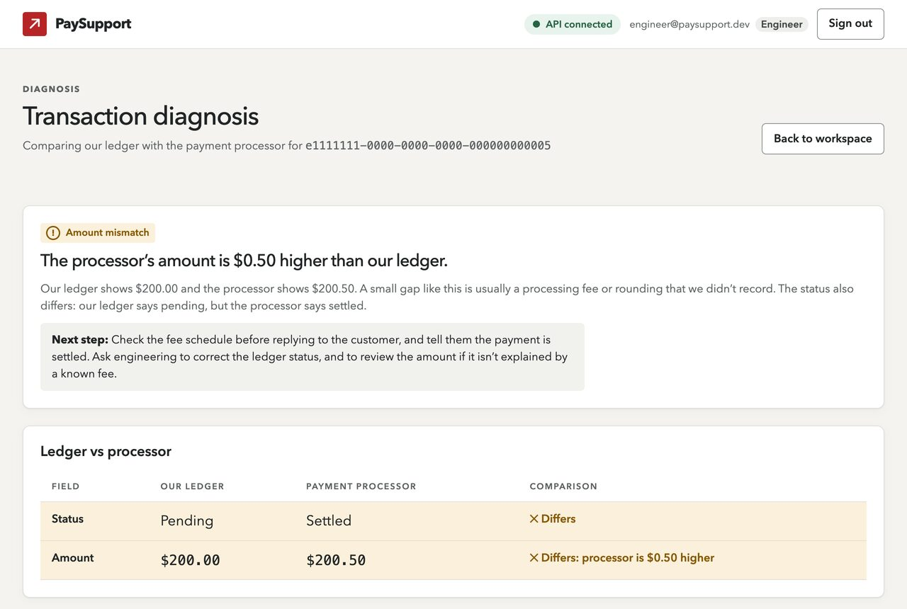
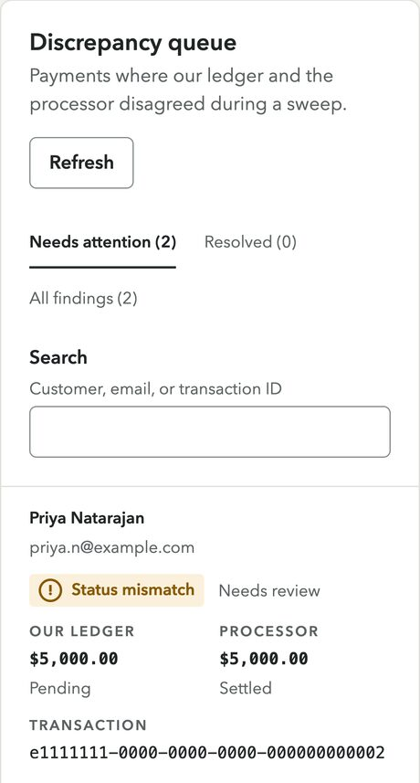

Problem
Payments move through two systems that don't always agree: a company's own ledger, and the processor that actually moved the money. When they drift apart, customers write in: "Why does the app say pending when the money already left my account?" Someone has to run a SQL query, call the processor's API, compare the two, and work out which one is stale, usually while the customer waits.
I built PaySupport to prepare for support engineering roles. I didn't want to just say I understood the job; I wanted to build the tool I'd want on my first day.
Process
I started with the API: Express and TypeScript with raw SQL (no ORM, so every query is visible and reviewable), plus a mock payment processor that deliberately drifts from the database on a few seeded payments and randomly times out, so the system has real problems to find. One endpoint diagnoses a single payment on demand, a sweep checks recent payments in bulk, and a script can run that sweep on a schedule.
Then I designed the dashboard around one person: not someone calmly exploring, but a support engineer mid-ticket, with a worried customer asking where their money went. That person shaped almost every decision.
Looking at real results caught something the tests didn't. A payment flagged as an amount mismatch (a $0.50 fee) also had the wrong status, but the API only reported the first problem, so the verdict explained a fee while the customer's real question went unanswered. Now the verdict checks both, and there's a test for that exact payment.
Key decisions
- The answer comes first. A diagnosis opens with a badge, one sentence saying what's wrong, and a highlighted next step. The side-by-side comparison comes after, and raw developer notes are folded away.
- Copy written for the person reading it. "Processor unavailable" tells the engineer not to say anything has gone wrong, because a timeout isn't a failed payment, and telling a worried customer the wrong thing is its own incident.
- Status is never color alone. Every badge has a word and an icon, and rows that differ say so in text: "Differs: processor is $0.50 higher."
- Red is only for the brand. In a payments tool red means error, so buttons are ink and outages are slate blue, never mistaken for a failure.
- Expensive actions ask first. A sweep can make 100 processor requests, so it sits behind a confirmation with focus on Cancel. Support staff, who can't run sweeps, get a sentence explaining who can instead of a dead button.
- IDs are never shortened. A truncated ID can't be pasted into a query, so every ID is shown in full, in monospace, with one-click copy.

Security
- The session token lives in memory only: never in local storage or a cookie, so a script injection bug can't read it. The tradeoff is that refreshing signs you out, and I documented the production fix rather than half-building it.
- The API is treated as untrusted input. Every response is validated at runtime before the interface touches it.
- A strict Content Security Policy, tested by injecting a script into the production build and confirming the browser refused to run it.
- Lint rules make unsafe code fail the checks, so patterns like raw HTML injection or reading tokens from storage can't quietly come back.
- The browser is a convenience; the API is the boundary. Hiding the sweep button is UX. The real check is the API's 403, which the dashboard explains in plain language.
Outcome
A working full-stack system: an Express API with JWT auth, validated inputs, an append-only audit log, interactive API docs and Docker Compose setup, plus a React 19 dashboard with just four runtime dependencies, light and dark themes, and a phone layout where the queue becomes cards.
It's backed by more than 100 automated tests across the API and dashboard, including automated accessibility checks on every page state and a deliberately broken "canary" test that must fail, because a check that can't fail proves nothing. Accessibility targets WCAG 2.2 AA, with contrast calculated for every color pair in both themes.

Honest note
The payment processor is a mock by design, the same shape as a real one without the compliance overhead, and the project runs locally rather than being deployed. Discrepancies can't be marked resolved from the dashboard yet, because the API doesn't support it; the interface says so instead of pretending. Next I'd add that endpoint and move the session to a secure cookie.